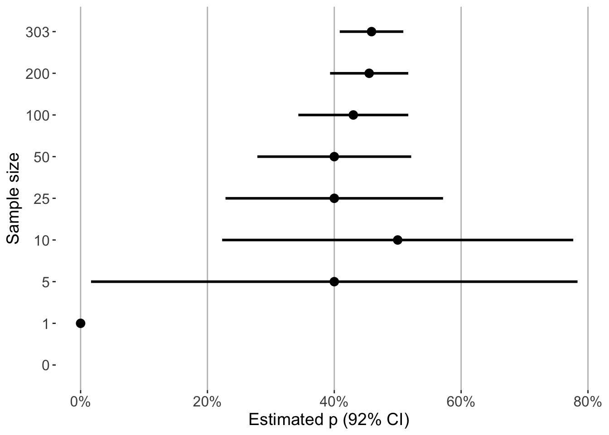
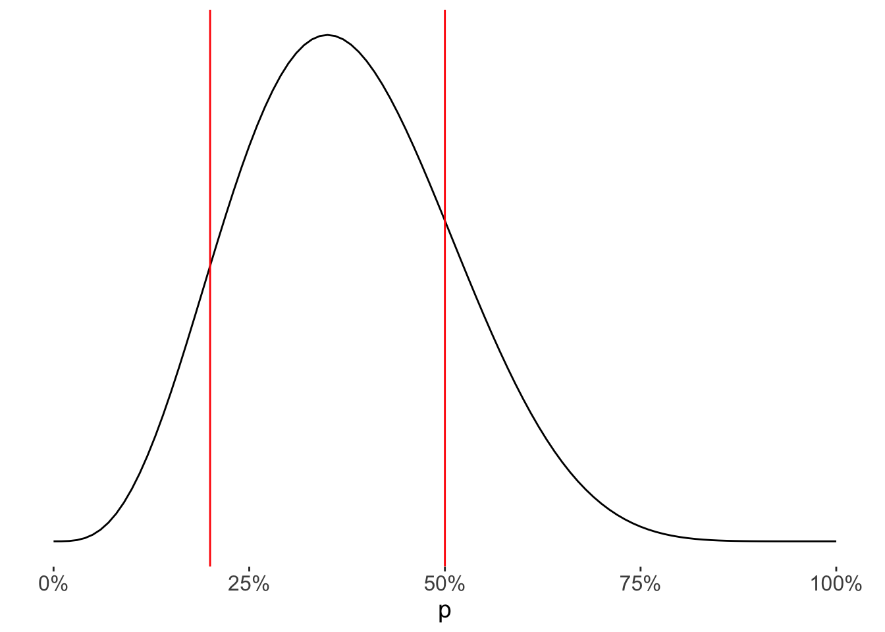
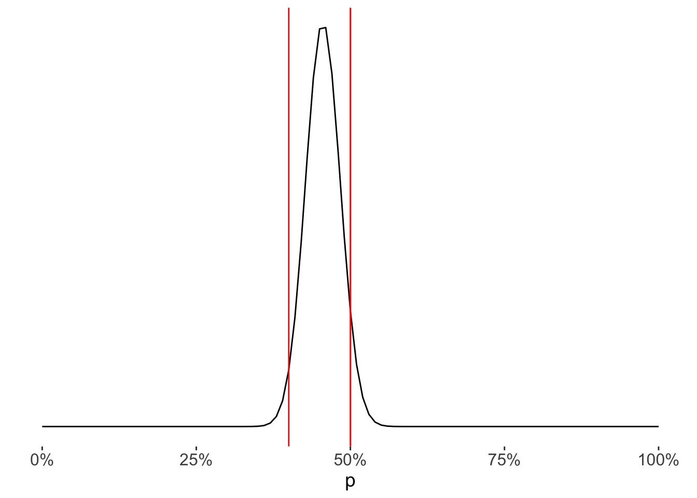

In frequentist statistics, the paradigm in which much of statistical practice is done, has a specific requirement: we need data before we can attribute estimates to (i.e., “fit”) our model. Yes, we might pre-specify it’s form, and be quite confident in what that looks like, but ultimately before we get an answer, we need the data.
For example, suppose we are interested in the proportion of individuals with heart disease. We can specify an assumed model:
\[X \sim Bernoulli(p)\]
where \(X \in \{0,1\}\) and \(p \in [0,1]\).
That is, we assume that whether an individual has heart disease is a coin flip with probability \(p\). Our goal is to estimate what \(p\) is.
We plan to use the typical approach for estimating a population proportion such that:
where \(x_i\) is the indicator of whether or not individual \(i\) in the sample has heart disease, and \(n\) is the total number of individuals in the sample. That is, we take the average, or sample proportion. The variance provides a window of uncertainty in our estimate.
Okay let’s do it.
But wait, in order for us to get a numerical quantity to work with, we need data to plug into these equations. That is the point. Our model in this paradigm becomes data focused, such that a sample is required. And a large enough one at that.
Our model of the world is completely dependent on collecting and entering a sample into the estimators, despite what we may already know about heart disease rates. Thus, it is only informed by the data at hand.
Okay, fine. So we find a dataset related to heart disease:
Code
dat <- cheese::heart_diseasedat
# A tibble: 303 × 9
Age Sex ChestPain BP Cholesterol BloodSugar MaximumHR
<dbl> <fct> <fct> <dbl> <dbl> <lgl> <dbl>
1 63 Male Typical angina 145 233 TRUE 150
2 67 Male Asymptomatic 160 286 FALSE 108
3 67 Male Asymptomatic 120 229 FALSE 129
4 37 Male Non-anginal pain 130 250 FALSE 187
5 41 Female Atypical angina 130 204 FALSE 172
6 56 Male Atypical angina 120 236 FALSE 178
7 62 Female Asymptomatic 140 268 FALSE 160
8 57 Female Asymptomatic 120 354 FALSE 163
9 63 Male Asymptomatic 130 254 FALSE 147
10 53 Male Asymptomatic 140 203 TRUE 155
# ℹ 293 more rows
# ℹ 2 more variables: ExerciseInducedAngina <fct>, HeartDisease <fct>
And we plug our estimates into the formulas and get our result:
Despite what we may think of this result (which is certainly high in any general population context), there’s not much wiggle room with respect to the output. The data is what it is: we estimate that \(p\) is somewhere between 41% and 51% with 92% confidence. And that’s it.
What if this sample wasn’t able to be gathered all at once? What if we already knew stuff about the rate of heart disease? What if we wanted our estimates to be informed by prior information we had?
When we consider our data being sequentially collected, we run into problems early on.
Code
# Set gridn_obs <-c(1, 5, 10, 25, 50, 100, 200, nrow(dat))# Set valuesp_hat <-c()n <-c()se <-c()# Iterate the gridfor(i in1:length(n_obs)) {# Compute estimates temp_n <- n_obs[i] temp_p_hat <-mean(dat$HeartDisease[1:temp_n] =="Yes") temp_se <-sqrt((temp_p_hat * (1- temp_p_hat)) / temp_n)# Add to lists p_hat <-c(p_hat, temp_p_hat) n <-c(n, temp_n) se <-c(se, temp_se)}# Make a plotlibrary(ggplot2)data.frame(p_hat =c(NA, p_hat), n =c(0, n),se =c(NA, se)) |>ggplot() +geom_point(aes(x =factor(n),y = p_hat ),size =3 ) +geom_linerange(aes(x =factor(n),ymin = p_hat -qnorm(.96) * se,ymax = p_hat +qnorm(.96) * se ),linewidth =1 ) +coord_flip() +theme(panel.background =element_blank(),panel.grid.major.x =element_line(color ="gray"),axis.text =element_text(size =12),axis.title =element_text(size =14) ) +scale_y_continuous(name ="Estimated p (92% CI)", labels = scales::percent) +xlab("Sample size")

First, when we have no data, we can’t get any estimate (obviously). We have to pretend we know nothing about what the rate of heart disease is. After adding only 1 observation, our estimate for \(p\) is 0% with a 92% confidence interval ranging from 0% to 0%. This is not useful or informative, as that estimate was based on a single individual. Then, when we just add 4 more observations, our estimate of \(p\) becomes wildly uncertain (40% with a 92% confidence interval from 2% to 78%). This accumulated information is inconsistent and counter-intuitive (of course I’m using large sample methods, so we could use more appropriate small sample approaches, but that’s part of the point). Eventually as more data is added, the estimate gets more precise, but, again, completely driven by the data.
The bottom line being that in the frequentist paradigm, we are handcuffed. We can’t mathematically provide estimates until there is sufficient data collected, despite what our intuition or prior knowledge tells us about the parameter of interest beforehand.
What if we have no data, or very little? What if we need to make decisions along the way before all of the data is collected, using our best estimate as of now? As we saw above, we need to wait to have sufficient data to get something reliable.
Is there a way to provide a starting point about what we think the true rate of heart disease is, and then have our estimates be informed or augmented by evidence?
Yes, by being a Bayesian.
Bayesian Thinking
The way I like to think about how Bayesian statistics differs from frequentist methods is that the model is everything. Here, we focus on the model and treat it as a living, breathing object. The data becomes secondary, sometimes an afterthought, and only used as needed in order to update our knowledge about the world as new information comes in.
Specify a prior distribution
Before any of the data is collected, we can use our subject matter knowledge about a phenomenon as to where we think a parameter value lies.
In the example above, suppose we thought it’s likely that the true parameter value \(p\) is somewhere around 35% in this population, of course allowing for some uncertainty.
We can assign a prior distribution to \(p\) using the Beta distribution (you could use anything you wanted that adheres to your prior knowledge, it just happens that this distribution works nicely in the case of proportions, an example of the conjugate prior):
where \(x \in [0,1]\), \(\alpha, \beta > 0\), and \(\Gamma(n) = (n-1)!\).
And we can construct a plot to visualize our initial beliefs about the parameter \(p\):
Code
# Get the density valuesx <-seq(0, 1, .01)y <-dbeta(x, 4.5, 7.5)# Make the plotdata.frame(x, y) |>ggplot() +geom_line(aes(x = x,y = y ) ) +geom_vline(xintercept =c(.2, .5),color ="red" ) +theme(panel.background =element_blank(),axis.text =element_text(size =12),axis.title =element_text(size =14),axis.title.y =element_blank(),axis.text.y =element_blank(),axis.ticks.y =element_blank() ) +scale_x_continuous(name ="p",labels = scales::percent )

So initially we think there is a 72% chance that the true value of \(p\) is between 20% and 50% (taken as the area under the curve between those two points), with more probability mass towards the center.
In this sense, we have our model estimate already in its complete form. If the current state of information isn’t sufficient, then we can collect data to help guide/inform our prior belief. So instead of requiring a (large enough) sample to realize any numerical estimate, we have one with zero data points. As we add data, our model will update proportionally/appropriately to the amount of new information it contains. Therefore, we can think of this prior distribution as equivalent to our currentposterior distribution, whether we got here from prior data, intuition, or a plain guess, it doesn’t really matter. Our current knowledge of \(p\) captures all that we know about it, and will only change as new information is added. Thus, we have constructed a model with no data.
Updating the model with data
Now we want a way to update our prior (or current) knowledge of the parameter of interest as new information comes in. The result of this is called the posterior distribution, which tells us where the parameter value(s) are most likely to be, given our prior beliefs + new data. The derivation of this distribution is done through Bayes’ theorem.
In our example (and any analysis), the posterior distribution is written as:
\[P(p|data) = \frac{P(p)P(data|p)}{P(data)}\]
The \(P(p)\) is the prior distribution, which we saw above, \(P(data|p)\) is the likelihood of observing our data given a particular value of \(p\), and \(P(data)\) is the probability of observing our dataset across all values of \(p\) (i.e., the law of total probability). In general, the denominator is not dependent on the parameter, and since we’re conditioned on the \(data\), this just amounts to a normalizing constant to ensure the posterior distribution is a valid probability distribution. Thus, we only need to concern ourselves with the form of the numerator, and can write the posterior as proportional to the product of the prior and likelihood:
\[P(p|data) \propto P(p)P(data|p)\]
Define the likelihood
Similar to what we saw in the frequentist approach above, the likelihood of the data in our Bayesian model can be thought of as a Bernoulli random variable, where each patient has heart disease or they don’t, for a given probability \(p\). Because our observations are independent, the collection of these “coin flips” can be summarized using the Binomial distribution:
\[H|n, p \sim Binomial(n,p)\]
where \(n\) is the sample size, \(p\) is the probability of heart disease (the parameter of concern), and \(H\) is the total number of patients with heart disease in a sample. The probability mass function (PMF) for this distribution looks like:
Notice that we only needed the kernel to classify this distribution, because that part was dependent on the parameter \(p\). The rest is just a constant that normalizes it to be a valid probability distribution (as mentioned earlier), meaning it sums (integrates) to 1. Thus, since we know it’s a Beta, we can write out the full posterior PDF:
What this tells us is that from our initial model, the posterior distribution is just moved/shifted as new data comes in. Also notice the effect of sample size as clearly indicated by the equation: as more data comes in (i.e., higher \(H\) and \(N\) values), the more the prior distribution will be drowned out. Meaning that we are only straying away from the initial/prior belief “proportional” to how much new information is coming in. This is what allows us to have perfectly valid models and estimates, even with a single observation or no data at all.
Plug in the data
The hard part is done. Now all we need to do is plug in our data into the posterior distribution. In our sample of 303 patients (\(n\)), we observed 139 patients with heart disease (\(H\)). Plotting it across the range of possible values for \(p\) looks like this:
Code
# Set sample statsH <-sum(dat$HeartDisease =="Yes")n <-nrow(dat)# Get the density valuesx <-seq(0, 1, .01)y <-dbeta(x, 4.5+ H, 7.5+ n - H)# Make the plotdata.frame(x, y) |>ggplot() +geom_line(aes(x = x,y = y ) ) +geom_vline(xintercept =c(.4, .5),color ="red" ) +theme(panel.background =element_blank(),axis.text =element_text(size =12),axis.title =element_text(size =14),axis.title.y =element_blank(),axis.text.y =element_blank(),axis.ticks.y =element_blank() ) +scale_x_continuous(name ="p",labels = scales::percent )

After our update using the data set (appended to our prior belief), we now estimate there is a 94% chance that the true value of \(p\) is between 40% and 50% (taken as the area under the curve between those two points), again with more probability mass towards the center.
Incremental updates
To drive the point home, we’ll now revisit how our estimates change when data is added sequentially, and contrast that with what we saw from the frequentist approach above. To do this, we can just evaluate the posterior distribution at incremental chunks of our dataset to see how it changes as more data is added (assuming some sort of chronological structure to the data).
As done before, the red lines indicate the amount of the posterior distribution between 40% and 50%.
First, we actually have an estimate before there is any data collected (when \(n=0\)). As we add a few observations, it only changes a little, but our estimates still retain our prior information about \(p\). Then as more data is collected, we see the posterior distribution become much more precise in where it estimates \(p\) to be.
This smooth integration of, and transition from, the prior knowledge we incorporate into the model to the information augmented by the data we collect is one reason why I think Bayesian thinking is better suited for scientific modeling. A more natural accumulation of knowledge, erasing the boundaries between what we already know (which should be considered a form of “data” itself) and hard data collected on a spreadsheet. It changes the way you approach the problem: instead of focusing right away on the data, which will be exhausted once it’s used, you focus on conceptualizing the living, breathing model of the world that generated it, and thus allow data to only contribute to that model as seen fit.
Source Code
---title: "Can you have a model without data?"description: "Yes, by being a Bayesian."author: "Alex Zajichek"date: "10/29/2024"image: "feature.png"categories: - Bayesian Statisticsformat: html: code-fold: true code-tools: true---{{< video https://www.youtube.com/embed/bUerkVsCwtA >}}In [frequentist](https://en.wikipedia.org/wiki/Frequentist_inference) statistics, the paradigm in which much of statistical practice is done, has a specific requirement: we need data _before_ we can attribute estimates to (i.e., "fit") our model. Yes, we might pre-specify it's form, and be quite confident in what that looks like, but ultimately before we get an answer, we need the data.For example, suppose we are interested in the proportion of individuals with heart disease. We can specify an assumed model:$$X \sim Bernoulli(p)$$where $X \in \{0,1\}$ and $p \in [0,1]$.That is, we assume that whether an individual has heart disease is a coin flip with probability $p$. Our goal is to estimate what $p$ is. We plan to use the [typical approach](https://en.wikipedia.org/wiki/Population_proportion) for estimating a population proportion such that:$$\hat{p} = \frac{\sum_{i=1}^nx_i}{n} \hskip.2in Var(\hat{p}) = \frac{\hat{p}(1-\hat{p})}{n}$$where $x_i$ is the indicator of whether or not individual $i$ in the sample has heart disease, and $n$ is the total number of individuals in the sample. That is, we take the average, or sample proportion. The variance provides a window of uncertainty in our estimate.Okay let's do it.But wait, in order for us to get a numerical quantity to work with, we need data to plug into these equations. *That is the point*. Our model in this paradigm becomes _data_ focused, such that a sample is required. And a large enough one at that. *Our model of the world is completely dependent on collecting and entering a sample into the estimators, despite what we may already know about heart disease rates. Thus, it is only informed by the data at hand.*Okay, fine. So we find a dataset related to heart disease:```{r}dat <- cheese::heart_diseasedat```And we plug our estimates into the formulas and get our result:```{r}# Sample proportionp_hat <-mean(dat$HeartDisease =="Yes")# Sample sizen <-nrow(dat)# Standard errorse <-sqrt((p_hat * (1- p_hat)) / n)# Construct confidence intervaldata.frame(Estimate =paste0(round(p_hat *100, 2), "%"),Lower =paste0(round(100* (p_hat -qnorm(.96) * se), 2), "%"),Upper =paste0(round(100* (p_hat +qnorm(.96) * se), 2), "%")) |> knitr::kable(format ="html") |> kableExtra::kable_styling(full_width =FALSE) |> kableExtra::add_header_above(c("", "92% Confidence Interval"=2))```Despite what we may think of this result (which is certainly high in any general population context), there's not much wiggle room with respect to the output. The data is what it is: we estimate that $p$ is somewhere between 41% and 51% with 92% confidence. And that's it.What if this sample wasn't able to be gathered all at once? What if we already knew stuff about the rate of heart disease? What if we wanted our estimates to be informed by prior information we had?When we consider our data being sequentially collected, we run into problems early on.```{r, warning = FALSE}# Set gridn_obs <- c(1, 5, 10, 25, 50, 100, 200, nrow(dat))# Set valuesp_hat <- c()n <- c()se <- c()# Iterate the gridfor(i in 1:length(n_obs)) { # Compute estimates temp_n <- n_obs[i] temp_p_hat <- mean(dat$HeartDisease[1:temp_n] == "Yes") temp_se <- sqrt((temp_p_hat * (1 - temp_p_hat)) / temp_n) # Add to lists p_hat <- c(p_hat, temp_p_hat) n <- c(n, temp_n) se <- c(se, temp_se)}# Make a plotlibrary(ggplot2)data.frame( p_hat = c(NA, p_hat), n = c(0, n), se = c(NA, se)) |> ggplot() + geom_point( aes( x = factor(n), y = p_hat ), size = 3 ) + geom_linerange( aes( x = factor(n), ymin = p_hat - qnorm(.96) * se, ymax = p_hat + qnorm(.96) * se ), linewidth = 1 ) + coord_flip() + theme( panel.background = element_blank(), panel.grid.major.x = element_line(color = "gray"), axis.text = element_text(size = 12), axis.title = element_text(size = 14) ) + scale_y_continuous(name = "Estimated p (92% CI)", labels = scales::percent) + xlab("Sample size")```First, when we have no data, we can't get _any_ estimate (obviously). We have to pretend we know _nothing_ about what the rate of heart disease is. After adding only 1 observation, our estimate for $p$ is 0% with a 92% confidence interval ranging from 0% to 0%. This is not useful or informative, as that estimate was based on a single individual. Then, when we just add 4 more observations, our estimate of $p$ becomes wildly uncertain (40% with a 92% confidence interval from 2% to 78%). This accumulated information is inconsistent and counter-intuitive (of course I'm using large sample methods, so we could use more appropriate small sample approaches, but that's part of the point). Eventually as more data is added, the estimate gets more precise, but, again, completely driven by the data.The bottom line being that in the frequentist paradigm, we are handcuffed. We can't mathematically provide estimates until there is sufficient data collected, despite what our intuition or prior knowledge tells us about the parameter of interest beforehand. What if we have no data, or very little? What if we need to make decisions along the way before all of the data is collected, using our best estimate as of _now_? As we saw above, we need to wait to have sufficient data to get something reliable.Is there a way to provide a starting point about what we _think_ the true rate of heart disease is, and then have our estimates be informed or augmented by evidence? Yes, by being a Bayesian.# Bayesian ThinkingThe way I like to think about how [Bayesian statistics](https://en.wikipedia.org/wiki/Bayesian_statistics) differs from frequentist methods is that _the model is everything_. Here, we focus on the _model_ and treat it as a living, breathing object. The data becomes secondary, sometimes an afterthought, and only used _as needed_ in order to update our knowledge about the world as new information comes in.## Specify a prior distribution {#prior}Before any of the data is collected, we can use our subject matter knowledge about a phenomenon as to where we think a parameter value lies. In the example above, suppose we thought it's likely that the true parameter value $p$ is somewhere around 35% in this population, of course allowing for some uncertainty. We can assign a [prior distribution](https://en.wikipedia.org/wiki/Prior_probability) to $p$ using the [Beta](https://en.wikipedia.org/wiki/Beta_distribution) distribution (you could use anything you wanted that adheres to your prior knowledge, it just happens that this distribution works nicely in the case of proportions, an example of the [conjugate prior](https://en.wikipedia.org/wiki/Conjugate_prior)):$$p \sim Beta(\alpha = 4.5, \beta = 7.5)$$where the [probability density function (PDF)](https://en.wikipedia.org/wiki/Probability_density_function) is defined as:$$f(x|\alpha, \beta) = \frac{\Gamma(\alpha+\beta)}{\Gamma(\alpha)\Gamma(\beta)}x^{\alpha-1}(1-x)^{\beta-1}$$where $x \in [0,1]$, $\alpha, \beta > 0$, and $\Gamma(n) = (n-1)!$.And we can construct a plot to visualize our initial beliefs about the parameter $p$:```{r}# Get the density valuesx <-seq(0, 1, .01)y <-dbeta(x, 4.5, 7.5)# Make the plotdata.frame(x, y) |>ggplot() +geom_line(aes(x = x,y = y ) ) +geom_vline(xintercept =c(.2, .5),color ="red" ) +theme(panel.background =element_blank(),axis.text =element_text(size =12),axis.title =element_text(size =14),axis.title.y =element_blank(),axis.text.y =element_blank(),axis.ticks.y =element_blank() ) +scale_x_continuous(name ="p",labels = scales::percent )```So initially we think there is a `r paste0(round(100 * (pbeta(.50, 4.5, 7.5) - pbeta(.20, 4.5, 7.5))), "%")` chance that the true value of $p$ is between 20% and 50% (taken as the area under the curve between those two points), with more probability mass towards the center.In this sense, we _have_ our model estimate already in its complete form. If the current state of information isn't sufficient, _then_ we can collect data to help guide/inform our prior belief. So instead of requiring a (large enough) sample to realize any numerical estimate, we have one with zero data points. As we add data, our model will update proportionally/appropriately to the amount of new information it contains. Therefore, we can think of this _prior_ distribution as equivalent to our _current_ [posterior distribution](https://en.wikipedia.org/wiki/Posterior_probability), whether we got here from prior data, intuition, or a plain guess, it doesn't really matter. Our current knowledge of $p$ captures all that we know about it, and will only change as new information is added. _Thus, we have constructed a model with no data._## Updating the model with dataNow we want a way to update our [prior](#prior) (or current) knowledge of the parameter of interest as new information comes in. The result of this is called the [posterior distribution](https://en.wikipedia.org/wiki/Posterior_probability), which tells us where the parameter value(s) are most likely to be, given our prior beliefs + new data. The derivation of this distribution is done through [Bayes' theorem](https://en.wikipedia.org/wiki/Bayes%27_theorem).In our example (and any analysis), the posterior distribution is written as:$$P(p|data) = \frac{P(p)P(data|p)}{P(data)}$$The $P(p)$ is the prior distribution, which we saw above, $P(data|p)$ is the _likelihood_ of observing our data given a particular value of $p$, and $P(data)$ is the probability of observing our dataset across all values of $p$ (i.e., the [law of total probability](https://en.wikipedia.org/wiki/Law_of_total_probability)). In general, the denominator is not dependent on the parameter, and since we're conditioned on the $data$, this just amounts to a normalizing constant to ensure the posterior distribution is a [valid probability distribution](https://study.com/skill/learn/how-to-determine-if-a-probability-distribution-is-valid-explanation.html). Thus, we only need to concern ourselves with the form of the numerator, and can write the posterior as _proportional_ to the product of the prior and likelihood:$$P(p|data) \propto P(p)P(data|p)$$### Define the likelihoodSimilar to what we saw in the frequentist approach above, the [likelihood](https://en.wikipedia.org/wiki/Likelihood_function) of the data in our Bayesian model can be thought of as a [Bernoulli](https://en.wikipedia.org/wiki/Bernoulli_distribution) random variable, where each patient has heart disease or they don't, for a given probability $p$. Because our observations are independent, the collection of these "coin flips" can be summarized using the [Binomial distribution](https://en.wikipedia.org/wiki/Binomial_distribution):$$H|n, p \sim Binomial(n,p)$$where $n$ is the sample size, $p$ is the probability of heart disease (the parameter of concern), and $H$ is the total number of patients with heart disease in a sample. The [probability mass function (PMF)](https://en.wikipedia.org/wiki/Probability_mass_function) for this distribution looks like:$$P(data|p) = P(H|n,p) = \frac{n!}{H!(n-H)!}p^H(1-p)^{n-H}$$So for a given sample size and probability, we can compute the likelihood of observing any number of patients with heart disease.### Derive the posteriorAs mentioned, the posterior is derived by taking the prior distribution multiplied by the likelihood function.$$\begin{equation} \begin{split}P(p|data) & \propto P(p)P(data|p) \\& = P(p)P(H|n, p)\\& = \frac{\Gamma(\alpha+\beta)}{\Gamma(\alpha)\Gamma(\beta)}p^{\alpha-1}(1-p)^{\beta-1} \frac{n!}{H!(n-H)!}p^H(1-p)^{n-H} \\& \propto p^{\alpha - 1 + H}(1-p)^{\beta - 1 + n - H}\end{split}\end{equation}$$It turns out this is just another Beta distribution with a different parameterization (note the * to differentiate from the prior parameter values):$$p|N,Y \sim Beta(\alpha^* = \alpha + H, \beta^* = \beta + n - H)$$Notice that we only needed the [kernel](https://en.wikipedia.org/wiki/Kernel_(statistics)) to classify this distribution, because that part was dependent on the parameter $p$. The rest is just a constant that normalizes it to be a valid probability distribution (as mentioned earlier), meaning it sums (integrates) to 1. Thus, since we know it's a Beta, we can write out the full posterior PDF:$$\begin{equation} \begin{split}f(p|\alpha^*, \beta^*) & = \frac{\Gamma(\alpha^* + \beta^*)}{\Gamma(\alpha^*)\Gamma(\beta^*)}p^{\alpha^*-1}(1-p)^{\beta^*-1} \\& = \frac{\Gamma(\alpha + \beta + n)}{\Gamma(\alpha + H)\Gamma(\beta + n - H)}p^{\alpha + H-1}(1-p)^{\beta + n - H-1} \\\end{split}\end{equation}$$What this tells us is that from our [initial model](#prior), the posterior distribution is just moved/shifted as new data comes in. Also notice the effect of sample size as clearly indicated by the equation: as more data comes in (i.e., higher $H$ and $N$ values), the more the prior distribution will be drowned out. Meaning that we are only straying away from the initial/prior belief "proportional" to how much new information is coming in. _This_ is what allows us to have perfectly valid models and estimates, even with a single observation or no data at all.### Plug in the dataThe hard part is done. Now all we need to do is plug in our data into the posterior distribution. In our sample of `r nrow(dat)` patients ($n$), we observed `r sum(dat$HeartDisease == "Yes")` patients with heart disease ($H$). Plotting it across the range of possible values for $p$ looks like this:```{r}# Set sample statsH <-sum(dat$HeartDisease =="Yes")n <-nrow(dat)# Get the density valuesx <-seq(0, 1, .01)y <-dbeta(x, 4.5+ H, 7.5+ n - H)# Make the plotdata.frame(x, y) |>ggplot() +geom_line(aes(x = x,y = y ) ) +geom_vline(xintercept =c(.4, .5),color ="red" ) +theme(panel.background =element_blank(),axis.text =element_text(size =12),axis.title =element_text(size =14),axis.title.y =element_blank(),axis.text.y =element_blank(),axis.ticks.y =element_blank() ) +scale_x_continuous(name ="p",labels = scales::percent )```After our update using the data set (appended to our prior belief), we now estimate there is a `r paste0(round(100 * (pbeta(.50, 4.5 + H, 7.5 + n - H) - pbeta(.20, 4.5 + H, 7.5 + n - H))), "%")` chance that the true value of $p$ is between 40% and 50% (taken as the area under the curve between those two points), again with more probability mass towards the center.### Incremental updatesTo drive the point home, we'll now revisit how our estimates change when data is added _sequentially_, and contrast that with what we saw from the frequentist approach above. To do this, we can just evaluate the posterior distribution at incremental chunks of our dataset to see how it changes as more data is added (assuming some sort of chronological structure to the data).```{r}# Set valuesp <-seq(0, 1, .01)results <-data.frame(n =0, p = p, y =dbeta(p, 4.5, 7.5))# Iterate the gridfor(i in1:length(n_obs)) {# Compute estimates temp_n <- n_obs[i] temp_H<-sum(dat$HeartDisease[1:temp_n] =="Yes") temp_y <-dbeta(p, 4.5+ temp_H, 7.5+ temp_n - temp_H)# Store values results <- results |>rbind(data.frame(n = temp_n,p = p,y = temp_y ) )}# Make the plotresults |>ggplot() +geom_line(aes(x = p,y = y ) ) +facet_wrap(~paste0("n = ", n) |> forcats::fct_reorder(y, max)) +geom_vline(xintercept =c(.4, .5),color ="red" ) +theme(panel.background =element_blank(),axis.text =element_text(size =10),axis.title =element_text(size =14),axis.title.y =element_blank(),axis.text.y =element_blank(),axis.ticks.y =element_blank() ) +scale_x_continuous(name ="p",labels = scales::percent )```As done before, the red lines indicate the amount of the posterior distribution between 40% and 50%.First, we actually have an estimate before there is any data collected (when $n=0$). As we add a few observations, it only changes a little, but our estimates still retain our prior information about $p$. Then as more data is collected, we see the posterior distribution become much more precise in where it estimates $p$ to be. This smooth integration of, and transition from, the prior knowledge we incorporate into the model to the information augmented by the data we collect is one reason why I think Bayesian thinking is better suited for scientific modeling. A more natural accumulation of knowledge, erasing the boundaries between what we already know (which should be considered a form of "data" itself) and hard data collected on a spreadsheet. It changes the way you approach the problem: instead of focusing right away on the data, which will be exhausted once it's used, you focus on conceptualizing the living, breathing _model_ of the world that generated it, and thus allow _data_ to only contribute to that model as seen fit.{{< bluesky-comments uri="at://did:plc:sh3av73hihgu72vx7k44kgv7/app.bsky.feed.post/3lbzdwct5222m" >}}